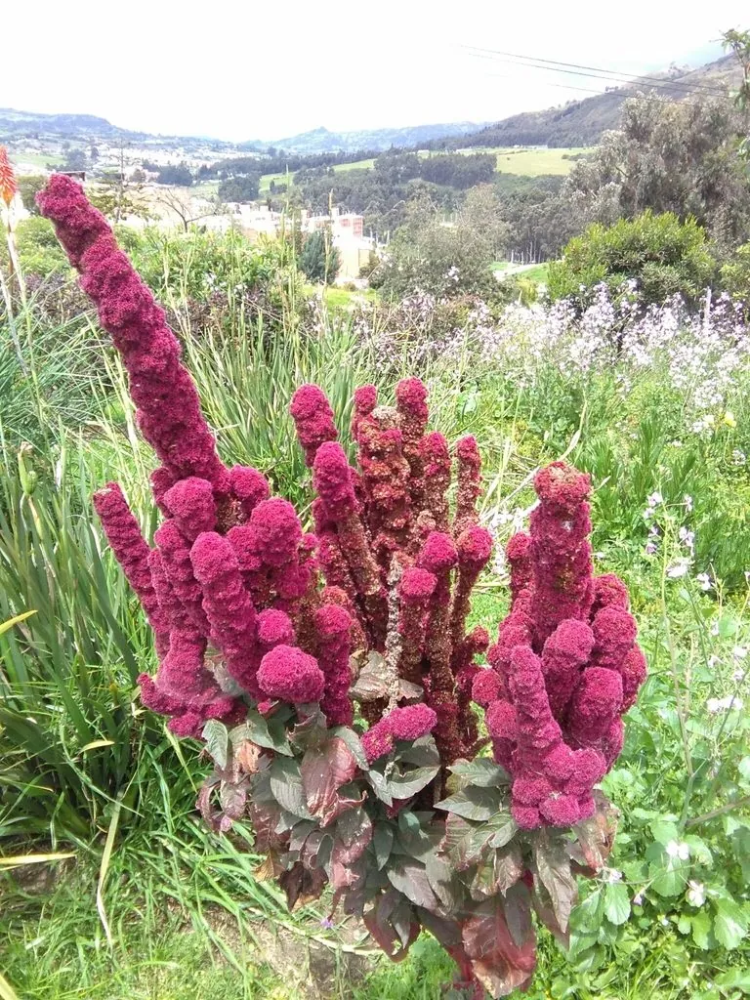

农作物与经济植物 · 植物界
藜麦 Chenopodium quinoa

藜麦的种子富含优质蛋白和氨基酸，被联合国粮农组织推荐为营养食品，原产安第斯山区，是伪谷物作物。
- 分类
- 门被子植物门纲双子叶植物纲目石竹目科藜科属藜属
- 栖息环境
- 高原冷凉干旱地区，耐旱耐寒耐盐碱
- 地理分布
- 原产南美安第斯山区，现主产于秘鲁、玻利维亚、中国青海等地
- 保护级别
- 暂无评估（栽培作物）
物种志
藜麦是一年生草本，株高 1–2 m，茎直立，有分枝。叶片互生，三角形或掌状分裂，边缘有齿，表面有粉霜。花小，黄绿色，圆锥花序，密集着生在枝顶。种子扁圆形，直径 1–2 mm，颜色有白、红、黑等，外有一层含皂苷的种皮。藜麦不是禾草，而是藜科植物，属于“伪谷物”。
藜麦原产南美洲安第斯山区，是当地原住民的传统粮食，栽培历史数千年。它耐旱、耐寒、耐盐碱，适应性强，适宜在高原冷凉地区种植。种子富含蛋白质、必需氨基酸、膳食纤维和矿物质，营养价值高，被联合国粮农组织推荐为营养食品，近年来在国际市场广受欢迎。食用前需用水搓洗去除种皮中的皂苷，否则会有苦味；可煮饭、煮粥、做沙拉。中国青海、甘肃等地已引种栽培。
形态与习性
- 株高1–2 m
- 种子扁圆形，直径 1–2 mm
- 营养富含蛋白质与必需氨基酸
- 注意种皮含皂苷，需搓洗
- 习性耐旱耐寒耐盐碱
趣味知识
- 藜麦不是禾本科谷物，而是藜科植物，属于“伪谷物”。
- 藜麦被联合国粮农组织推荐为营养食品，蛋白质含量高。
- 藜麦种皮含皂苷，煮前要搓洗，否则会有苦味。